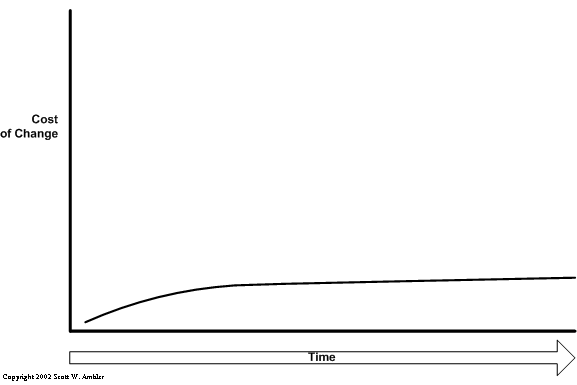

Automated Testing
The Cost of Change
Software systems last for years
many times decades
Traditional

with Automated Tests
Test code is more valuable than production code
We write tests to create a production system
Deterministic Code
Unit Test This
public DateTime GetFirstDayOfMonth()
{
var d = DateTime.Now;
return new DateTime(d.Year, d.Month, 1);
}a deterministic system is a system in which no randomness is involved in the development of future states of the system
-- wikipedia
deterministic production code is testable code
Testable
public DateTime GetFirstDayOfMonth(DateTime currentDay)
{
return new DateTime(currentDay.Year, currentDay.Month, 1);
}Testing with Current Date / Time
public interface IClock
{
DateTime GetCurrentDate();
}
public class RealClock : IClock
{
public DateTime GetCurrentDate()
{
return DateTime.Now;
}
}Testing with Current Date / Time
public class ClockForTesting : IClock
{
private readonly DateTime _currentDateTime;
public ClockForTesting(
DateTime currentDateTime)
{
_currentDateTime = currentDateTime;
}
public DateTime GetCurrentDate()
{
return _currentDateTime;
}
}Also Testable
public DateTime GetFirstDayOfMonth(IClock clock)
{
var currentDay = clock.GetCurrentDate();
return new DateTime(currentDay.Year, currentDay.Month, 1);
}